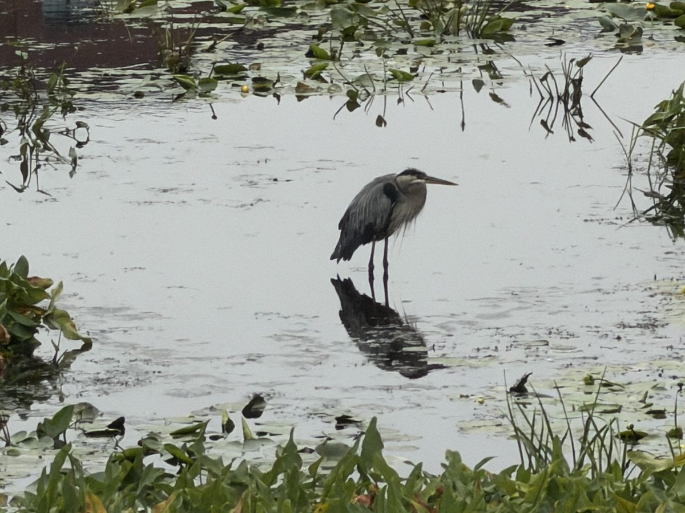
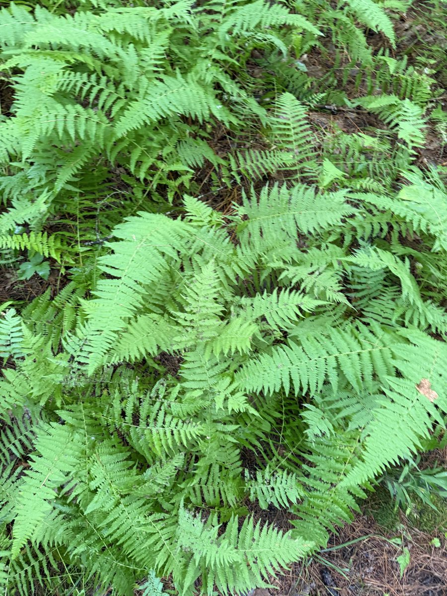
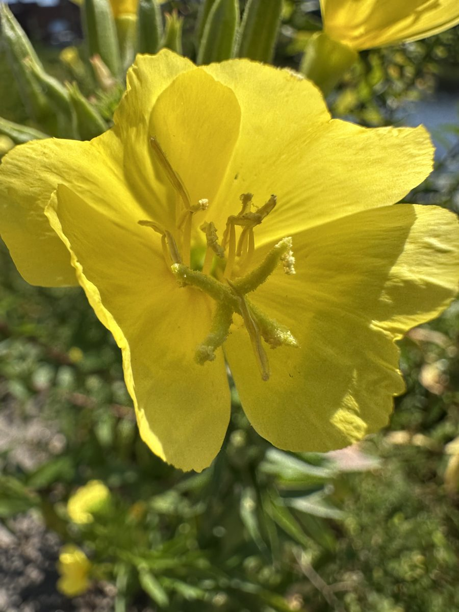
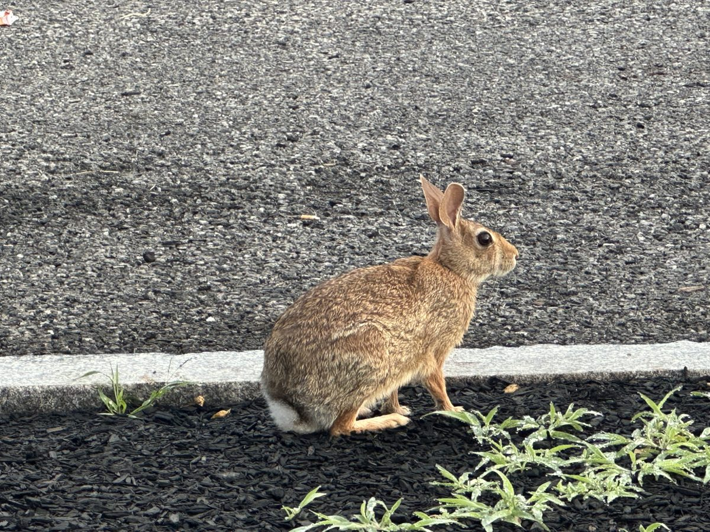
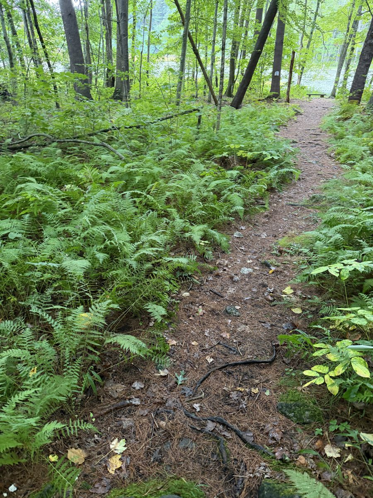

In my free time I hike, take photos of whatever is growing or wading around Boston, and make art
out of those photos with code. I play tennis and basketball with friends, and I play video games 🏀👾.
The work side of the story is on the home page. This page is the rest.
01 / Outside
Hiking and nature
Most weekends I am on a trail or walking the river. I shoot what I find with my phone:
herons in the shallows, ferns on the forest floor, moss on granite, a rabbit on the sidewalk.
The old mill buildings along the water sneak into the frame too.
These photos are the raw material for the art below.

Heron, still water

Ferns

Evening primrose

Sidewalk rabbit

Trail
Mill on the river
02 / Art
Collages from code
I like making art with scripts. A piece can be rerun, tuned, and rerun again, and the same
seed always gives the same picture. This series starts from the hiking photos above.
A Python script picks ten photos. It splits the page into organic regions and pins a subject,
a heron or a flower or the rabbit, on a rule of thirds point. Nature shots fill in around the
subject. Buildings and the pianos go to the edges, and some of those edge regions turn into a
circuit board. Then the page gets burnt edges, and ferns and leaves grow over the front.
scorei(p) = −|p − si| / Ri + a · noisei(p)
Every site si gets its own smooth noise field. A pixel p belongs to the site with the highest score. The noise bends every border into a lobed, torn outline instead of a straight wall.
The whole piece
# one collage, one seedpick 10 photos with replacement
place 1 to 3 subjects on rule-of-thirds points
for each pixel p:
region(p) = argmax_i -|p - s_i| / R_i + a * noise_i(p)
fill each region with a crop of its photo
subject regions last, on top, never upscaled
turn about 45% of backdrop regions into circuit board
burn the edges: char band, brown scorch, a few holes
draw ferns and leaves in front, near plane blurred
Python with numpy, scipy and Pillow. No models, no prompts. Change the seed and you get a new piece.
03 / Sports
Tennis and basketball
Basketball
Pickup with friends is the standing plan. It is the one thing on the calendar that never moves.
Tennis
The sport I am actively trying to get better at. Mostly doubles, mostly working on the serve.
04 / Games
Video games
Playing games is how I unwind. Building them is how I learned to care about systems: inventory,
state, save files, and the UI that holds it all together.
A few I have built are on the projects page:
21 Magiks, a Zelda-inspired adventure in Unity,
Munch Mayhem, an idle kitchen game in Godot, and
Impulse-VR, a VR game you control with your brain.